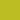
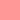
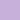
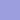
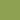
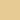
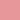
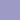

Ordinal Scales
Wiki ▸ [[API Reference]] ▸ [[Scales]] ▸ Ordinal Scales
| Scales are functions that map from an input domain to an output range. Ordinal scales have a discrete domain, such as a set of names or categories. There are also [[quantitative scales | Quantitative-Scales]], which have a continuous domain, such as the set of real numbers. Scales are an optional feature in D3; you don’t have to use them, if you prefer to do the math yourself. However, using scales can greatly simplify the code needed to map a dimension of data to a visual representation. |
A scale object, such as that returned by d3.scale.ordinal, is both an object and a function. That is: you can call the scale like any other function, and the scale has additional methods that change its behavior. Like other classes in D3, scales follow the method chaining pattern where setter methods return the scale itself, allowing multiple setters to be invoked in a concise statement.
# d3.scale.ordinal()
Constructs a new ordinal scale with an empty domain and an empty range. The ordinal scale is invalid (always returning undefined) until an output range is specified.
# ordinal(x)
Given a value x in the input domain, returns the corresponding value in the output range.
If the range was specified explicitly (as by range, but not rangeBands, rangeRoundBands or rangePoints), and the given value x is not in the scale’s domain, then x is implicitly added to the domain; subsequent invocations of the scale given the same value x will return the same value y from the range.
# ordinal.domain([values])
If values is specified, sets the input domain of the ordinal scale to the specified array of values. The first element in values will be mapped to the first element in the output range, the second domain value to the second range value, and so on. Domain values are stored internally in an associative array as a mapping from value to index; the resulting index is then used to retrieve a value from the output range. Thus, an ordinal scale’s values must be coercible to a string, and the stringified version of the domain value uniquely identifies the corresponding range value. If values is not specified, this method returns the current domain.
Setting the domain on an ordinal scale is optional. If no domain is set, a range must be set explicitly. Then, each unique value that is passed to the scale function will be assigned a new value from the output range; in other words, the domain will be inferred implicitly from usage. Although domains may thus be constructed implicitly, it is still a good idea to assign the ordinal scale’s domain explicitly to ensure deterministic behavior, as inferring the domain from usage will be dependent on ordering.
# ordinal.range([values])
If values is specified, sets the output range of the ordinal scale to the specified array of values. The first element in the domain will be mapped to the first element in values, the second domain value to the second range value, and so on. If there are fewer elements in the range than in the domain, the scale will recycle values from the start of the range. If values is not specified, this method returns the current output range.
This method is intended for when the set of discrete output values is computed explicitly, such as a set of categorical colors. In other cases, such as determining the layout of an ordinal scatterplot or bar chart, you may find the rangePoints or rangeBands operators more convenient.
# ordinal.rangePoints(interval[, padding])
Sets the output range from the specified continuous interval. The array interval contains two elements representing the minimum and maximum numeric value. This interval is subdivided into n evenly-spaced points, where n is the number of (unique) values in the input domain. The first and last point may be offset from the edge of the interval according to the specified padding, which defaults to zero. The padding is expressed as a multiple of the spacing between points. A reasonable value is 1.0, such that the first and last point will be offset from the minimum and maximum value by half the distance between points.

```javascript var o = d3.scale.ordinal() .domain([1, 2, 3, 4]) .rangePoints([0, 100]);
o.range(); // [0, 33.333333333333336, 66.66666666666667, 100] ```
# ordinal.rangeRoundPoints(interval[, padding])
Like rangePoints, except guarantees that the range values are integers so as to avoid antialiasing artifacts.
```js var o = d3.scale.ordinal() .domain([1, 2, 3, 4]) .rangeRoundPoints([0, 100]);
o.range(); // [1, 34, 67, 100] ```
Note that rounding necessarily introduces additional outer padding which is, on average, proportional to the length of the domain. For example, for a domain of size 50, an additional 25px of outer padding on either side may be required. Modifying the range extent to be closer to a multiple of the domain length may reduce the additional padding.
```js var o = d3.scale.ordinal() .domain(d3.range(50)) .rangeRoundPoints([0, 95]);
o.range(); // [23, 24, 25, …, 70, 71, 72] o.rangeRoundPoints([0, 100]); o.range(); // [1, 3, 5, …, 95, 97, 98] ```
(Alternatively, you could round the output of the scale manually or apply shape-rendering: crispEdges. However, this will result in irregularly spaced points.)
# ordinal.rangeBands(interval[, padding[, outerPadding]])
Sets the output range from the specified continuous interval. The array interval contains two elements representing the minimum and maximum numeric value. This interval is subdivided into n evenly-spaced bands, where n is the number of (unique) values in the input domain. The bands may be offset from the edge of the interval and other bands according to the specified padding, which defaults to zero. The padding is typically in the range [0,1] and corresponds to the amount of space in the range interval to allocate to padding. A value of 0.5 means that the band width will be equal to the padding width. The outerPadding argument is for the entire group of bands; a value of 0 means there will be padding only between rangeBands.

```javascript var o = d3.scale.ordinal() .domain([1, 2, 3]) .rangeBands([0, 100]);
o.rangeBand(); // 33.333333333333336 o.range(); // [0, 33.333333333333336, 66.66666666666667] o.rangeExtent(); // [0, 100] ```
# ordinal.rangeRoundBands(interval[, padding[, outerPadding]])
Like rangeBands, except guarantees that range values and band width are integers so as to avoid antialiasing artifacts.
```js var o = d3.scale.ordinal() .domain([1, 2, 3]) .rangeRoundBands([0, 100]);
o.range(); // [1, 34, 67] o.rangeBand(); // 33 o.rangeExtent(); // [0, 100] ```
Note that rounding necessarily introduces additional outer padding which is, on average, proportional to the length of the domain. For example, for a domain of size 50, an additional 25px of outer padding on either side may be required. Modifying the range extent to be closer to a multiple of the domain length may reduce the additional padding.
```js var o = d3.scale.ordinal() .domain(d3.range(50)) .rangeRoundBands([0, 95]);
o.range(); // [23, 24, 25, …, 70, 71, 72]
o.rangeRoundBands([0, 100]); o.range(); // [0, 2, 4, …, 94, 96, 98] ```
(Alternatively, you could round the output of the scale manually or apply shape-rendering: crispEdges. However, this will result in irregularly spaced and sized bands.)
# ordinal.rangeBand()
Returns the band width. When the scale’s range is configured with rangeBands or rangeRoundBands, the scale returns the lower value for the given input. The upper value can then be computed by offsetting by the band width. If the scale’s range is set using range or rangePoints, the band width is zero.
# ordinal.rangeExtent()
Returns a two-element array representing the extent of the scale’s range, i.e., the smallest and largest values.
# ordinal.copy()
Returns an exact copy of this ordinal scale. Changes to this scale will not affect the returned scale, and vice versa.
Categorical Colors
# d3.scale.category10()
Constructs a new ordinal scale with a range of ten categorical colors:
 #1f77b4
#1f77b4
 #ff7f0e
#ff7f0e
 #2ca02c
#2ca02c
 #d62728
#d62728
 #9467bd
#9467bd
 #8c564b
#8c564b
#e377c2
#7f7f7f
 #bcbd22
 #17becf
#17becf
# d3.scale.category20()
Constructs a new ordinal scale with a range of twenty categorical colors:
#1f77b4
#aec7e8
#ff7f0e
 #ffbb78
#ffbb78
#2ca02c
 #98df8a
#98df8a
#d62728
 #ff9896
#9467bd
 #c5b0d5
#8c564b
 #c49c94
#c49c94
#e377c2
#f7b6d2
#7f7f7f
#c7c7c7
#bcbd22
#dbdb8d
#17becf
#9edae5
# d3.scale.category20b()
Constructs a new ordinal scale with a range of twenty categorical colors:
#393b79
#5254a3
#6b6ecf
 #9c9ede
#637939
 #8ca252
#b5cf6b
#cedb9c
#8c6d31
#bd9e39
#e7ba52
 #e7cb94
#843c39
#ad494a
 #d6616b
#d6616b
 #e7969c
#7b4173
#a55194
#ce6dbd
#de9ed6
# d3.scale.category20c()
Constructs a new ordinal scale with a range of twenty categorical colors:
#3182bd
#6baed6
#9ecae1
#c6dbef
#e6550d
#fd8d3c
#fdae6b
#fdd0a2
 #31a354
#31a354
 #74c476
#74c476
#a1d99b
#c7e9c0
#756bb1
 #9e9ac8
 #bcbddc
#bcbddc
#dadaeb
#636363
#969696
#bdbdbd
#d9d9d9
ColorBrewer
| D3 also bundles some fantastic categorical color scales by [[Cynthia Brewer | http://colorbrewer2.org/]]. You can find those in either CSS or JavaScript form in lib/colorbrewer. |
For CSS, assign a class such as “q0-3”, “q1-3” or “q2-3” to the element you wish it be filled. Then, set the class attribute on a parent element (such as the SVG element) with the desired color scale name, such as “RdBu” or “Blues”. For examples, see: calendar heatmap, choropleth.
For JavaScript, you can use colorbrewer.RdBu[9] or equivalent as the range of a d3.scale.ordinal. For example:
js
var o = d3.scale.ordinal()
.domain(["foo", "bar", "baz"])
.range(colorbrewer.RdBu[9]);